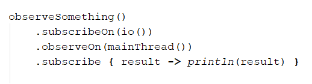
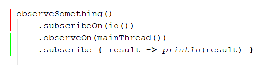
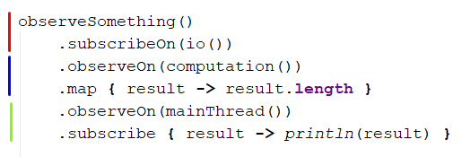
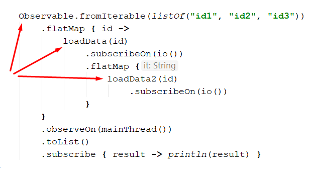

From RxJava 2 to Kotlin Flow: Threading

Introduction⌗
For a long time RxJava was undisputed leader for reactive solutions on Android, though with Kotlin expansion and introducing cold streams (Flow) seems situation might be rapidly changing in the coming years. Though reactive programming is not related to threading in the first place, concurrency and parallelism are very important anyway. In this article we’ll try to make short recap on threading in RxJava 2 (with some basic caveats on its usage) and then take a look at how threading works in Kotlin Flow, so if anyone would like to migrate their code without affecting functionality it would be nice and smooth.
Let’s start from the short recap on RxJava 2.
RxJava 2⌗
Both RxJava 2 Observable and Kotlin Flow are cold streams. That means that code inside is not executed until there is subscription.
In RxJava there are also other types such as Flowable, Single, etc. In the article we’ll talk about Observable only because everything else applies to other types as well.
Basic usage looks like the following:

Here we see that we observe for some changes with subscribing on io. And each result received we print on main thread (because we are observing on main).
subscribeOn⌗
This is an operator which declares on which scheduler observable will be subscribed to. “Where it will be subscribed” means — “on which scheduler our chain will be started”.
The first important thing about subscribeOn is that it doesn’t matter where it will be:
Both these cases produce same results and it is not surprise. By providing this operator in the chain we declare where chain will be started — and this knowledge can’t be dependent on position.
Second thing is that as chain can’t be started on multiple schedulers simultaneously — there is no need to put multiple subscribeOn in the chain as only one will take effect. If you for some reason put multiple subscribeOn operators in the chain, then the top one will win and the bottom will be ignored:

observeOn⌗
When subscribeOn says on which scheduler chain will be started, observeOn says on which scheduler thread will proceed. Effectively that means that observeOn changes scheduler in the chain below itself.

Here we see that from the chain started till the observeOn we’re on io (red line) and then observeOn changes chain to be run on mainThread scheduler — so everything below is on mainThread now (green line).
Unlike subscribeOn it is actually has some sense to add multiple observeOn if there is a need:

If we look at example above: here we might say that we load something from network, then calculate something and then print result. Adding multiple observeOn first switches to computation scheduler (to make computation in background thread — it is blue line), and then switch to mainThread to print result.
just + defer⌗
One common mistake with subscribeOn is its usage with Observable.just.

Value inside just is calculated immediately and not upon subscription. That means that if you create such observable on main thread, then that potentially heavy computation will be done on main thread. Subscription would be done correctly on io, but value for just will be calculated before that.
One of the ways to fix this is to wrap your Observable.just into Observable.defer, so everything inside will be calculated upon subscription and on the scheduler we’ve declared in subscribeOn:
flatMap concurrency and parallelism⌗
Another tricky thing comes from the usage of operator flatMap and understanding of the concurrency and parallelism.
One example to understand a problem is when we have stream of list of ids and for each we’d like to load some data from the network:

What we could expect here is that we’ve subscribed to io, io() has thread pool under the hood, therefore our loadData calls for each id was successfully paralleled. But that’s not the case. We wrote concurrent code using flatMap, but it is not run in parallel and the reason of that is that we’ve declared our chain to be started on io. Our chain start is on flatMapIterable and that means that upon subscription one thread from io pool will be taken and on that single thread everything will be run. In order to change behavior and make our code run in parallel we need to move subscribeOn inside flatMap:

Each inner observable (observable inside flatMap) will be subscribed as soon as event comes into flatMap. On each event there will be subscription on which new thread from io pool will be taken. And this way we achieve parallelism.
So, when we use some operators like flatMap our chain has more than one subscription points: one for original chain start and one for each inner observable:

On the picture arrows point where subscription happens. Using subscribeOn we can declare on which scheduler subscription in such a points should happen.
No threading⌗
Last but not least if we don’t use subscribeOn or observeOn, then code will be synchronous. All the execution will be sequential and before observable completed execution of next statements will be blocked.
That’s is basically it on the threading in RxJava, now let’s move on to Kotlin Flow.
Kotlin Flow⌗
Basic usage with Kotlin Flow is the following:
And here we immediately have many concepts which are related to coroutines, which might be needed to explain. We’ll not dive deep into explaining coroutines stuff, article is about Kotlin Flow, so it might be a good idea to read the documentation on the coroutines first if you are not familiar with them.
This example is identical (to some extent) to the example we’ve used in RxJava part: we again observe some changes on io and then print result on main, though the structure is different. Let’s find out the difference and how this works.
First thing which we should note is that flow can be collected only inside some coroutine scope (because collect method is a suspend function). Because of that we’ve created scope and in that scope launch’ed new coroutine. In that launched coroutines we now can collect the flow.
One important thing about Kotlin flow and collect function is a feature called context preservation. That means that we don’t need to declare on which Dispatcher to collect the data — that dispatcher always will be same as in the scope in which we’re collecting data from our flow.
So if we want to collect in Main, then we need to call collect function in the coroutine with Dispatchers.Main in the context.
flowOn⌗
This is an operator which changes the context (dispatcher particularly) on which flow is working.
So in our example above, by writing flowOn(Dispatchers.IO) we say that we want everything before it run on the IO.
If we add some computation (inside map) as we’ve done before with RxJava we’ll have the following result:
We’ll see that basically we can change where our operators should work by declaring flowOn after them.
launchIn⌗
One important thing about collect function is that it is suspending. That means that when we call collect execution is suspended until flow is finished.
So if you put inside same coroutine two collect functions, then first one will effectively block second from execution:

Here we’ll see result printed, but “second $result” not, because first collect function will suspend and not allow second collect to happen.
To fix that we need to launch each flow in a separate coroutine:
But it doesn’t look pretty and to make it look a bit better (without additional nested level) we can use launchIn extension function (which is just syntactic sugar over that wrapped launch) with onEach:

This way we create code which looks more similar to us (who wrote on RxJava before), because subscription in RxJava usually not blocking (unless some blockingXXX method is used), so seems launchIn should be primary option for similar use cases.
flowOf⌗
With flowOf we have similar situation as with Observable.just. If you put some calculation (suspending) then it will be done in the outer scope and not affected by flowOn:

If run inside context with Dispatchers.Main, then calculate() will be run on main and not on io.
To fix that you can use flow builder and explicitly emit value inside:
Then calculation will be done on IO thread.
flatMapMerge concurrency and parallelism⌗
To find out how Kotlin Flow works with flatMapMerge (analog of RxJava flatMap) we’ll use few test examples:
Here we have flow which is collected on d1 dispatcher. The flow has two items, which are flat mapped onto two other items each. And we have single flowOn on the d2 dispatcher. In the code we’ve added onEach call with information on the thread on which execution happens.
In this example the output would be:
inner: pool-2-thread-2 @coroutine#4
inner: pool-2-thread-3 @coroutine#5
inner: pool-2-thread-3 @coroutine#5
inner: pool-2-thread-2 @coroutine#4
collect: pool-1-thread-2 @coroutine#2
collect: pool-1-thread-2 @coroutine#2
collect: pool-1-thread-2 @coroutine#2
collect: pool-1-thread-2 @coroutine#2
So, we see that unlike RxJava even when we’ve put flowOn outside (below) the inner flatMapMerge,flowOn anyway affected the inner code by running it in parallel on multiple threads.
If we put flowOn inside flatMapMerge:
we’ll see the following result:
inner: pool-2-thread-2 @coroutine#6
inner: pool-2-thread-1 @coroutine#7
inner: pool-2-thread-2 @coroutine#6
inner: pool-2-thread-1 @coroutine#7
collect: pool-1-thread-3 @coroutine#2
collect: pool-1-thread-3 @coroutine#2
collect: pool-1-thread-3 @coroutine#2
collect: pool-1-thread-3 @coroutine#2
Again each inner flow runs on its own thread from second pool. Therefore there seems no difference where we put flowOn.
But there is a difference and let’s see what it is by adding onEach below first flowOf call:
The result will be:
outer: pool-2-thread-1 @coroutine#3
outer: pool-2-thread-1 @coroutine#3
inner: pool-2-thread-2 @coroutine#4
inner: pool-2-thread-3 @coroutine#5
inner: pool-2-thread-3 @coroutine#5
inner: pool-2-thread-2 @coroutine#4
collect: pool-1-thread-2 @coroutine#2
collect: pool-1-thread-2 @coroutine#2
collect: pool-1-thread-2 @coroutine#2
collect: pool-1-thread-2 @coroutine#2
That means that everything above flowOn is run on the second pool. Outer is on the first thread and each inner flow on its own (second and third):
In red it is shown running on d2, and in blue — on d1 .
Now let’s see what would be if we put flowOn inside flatMapMerge:
The output will be:
outer: pool-1-thread-2 @coroutine#3
outer: pool-1-thread-2 @coroutine#3
inner: pool-2-thread-1 @coroutine#6
inner: pool-2-thread-2 @coroutine#7
inner: pool-2-thread-1 @coroutine#6
inner: pool-2-thread-2 @coroutine#7
collect: pool-1-thread-3 @coroutine#2
collect: pool-1-thread-3 @coroutine#2
collect: pool-1-thread-3 @coroutine#2
collect: pool-1-thread-3 @coroutine#2
We see that outer now runs on the d1 and therefore not affected by flowOn:

And that’s the difference.
Comparison⌗
Now let’s make some comparison and conclusion and also see few examples.
From the comparison part both RxJava and Kotlin Flow represent cold streams. Both have general operators and approaches for changing threading (schedulers or dispatchers) in the chain.
Control of threading⌗
In RxJava for threading Schedulers are used (most common io(), computation(), mainThread())
In Kotlin Flow for threading Dispatchers are used (most common IO, Default, Main)
Threading operators⌗
In RxJava we declare on which scheduler chain should be subscribed (started) using subscribeOn, and where it should proceed using observeOn.
In Kotlin Flow we declare on which context (dispatcher) chain should be collected (ended) using scope in which flow is collected, and where it works before that using flowOn.
So it is like reversed approaches. In RxJava we declare start and modify chain below. In Kotlin Flow we have end declared and can modify chain above.
Migration Example⌗
Consider we have some complex RxJava chain we’d like to migrate to Kotlin Flow keeping the threading logic as before. From above we already understand that we basically need flip upside-down our mental model and do not forget to test.
Also we should already keep in mind that non-blocking threading in RxJava and suspending with thread reusing between coroutines are different approaches and we won’t be able to have exact one-to-one relation. Though we can put some constraints, like we want to keep parallelism where we had it and have same blocks of code run on same thread pools.
To make our test example as correct as possible we’ll use java executors under the hood of the Scheduler and Dispatcher. We’ll create a number of them for Rx:

And for Kotlin Flow:
We’ll have 4 pools with 3 threads and main executor with only one thread.
Our RxJava example will look like the following:
Here we have stream of three items, which is started on s1, then we switch execution to s2. Inside flatMap we have inner observable with its own subscribe (allowing parallelism) and also some thread switching. Then after flat mapping we do some work and print result in main thread.
After we run the program we’ll see such an output:
1: pool-1-thread-1
1: pool-1-thread-1
1: pool-1-thread-1
2: pool-3-thread-1
2: pool-3-thread-1
2: pool-3-thread-1
inner 1: pool-4-thread-1
inner 1: pool-4-thread-2
inner 1: pool-4-thread-1
inner 1: pool-4-thread-1
inner 1: pool-4-thread-2
inner 1: pool-4-thread-2
inner 1: pool-4-thread-3
inner 2: pool-5-thread-1
inner 2: pool-5-thread-2
3: pool-5-thread-1
inner 2: pool-5-thread-2
inner 1: pool-4-thread-3
inner 2: pool-5-thread-2
inner 2: pool-5-thread-3
3: pool-5-thread-1
3: pool-5-thread-1
3: pool-5-thread-1
end: pool-6-thread-1
end: pool-6-thread-1
inner 1: pool-4-thread-3
end: pool-6-thread-1
3: pool-5-thread-1
inner 2: pool-5-thread-1
3: pool-5-thread-1
inner 2: pool-5-thread-3
inner 2: pool-5-thread-1
end: pool-6-thread-1
3: pool-5-thread-3
3: pool-5-thread-3
end: pool-6-thread-1
inner 2: pool-5-thread-3
3: pool-5-thread-3
end: pool-6-thread-1
end: pool-6-thread-1
end: pool-6-thread-1
end: pool-6-thread-1
It is pretty long, but should match our assumptions written before. Let’s visualize this:

So here we see exactly what we’ve described above. The main trick is that “3” is run on the same scheduler as “inner 2”. We had two starting points (original and inner), where we put the subscribeOn allowing paralleling inside inner. And then moved below the chain adding where necessary observeOn.
Now we’ll switch to the Kotlin Flow version:

From the very beginning we fix the main thread as being our end thread. Then we start from the bottom and add flowOn where needed. First we add d4 and note that “inner 2” should also run on it. Then we switch to d3 and so on up to the very top of the chain. And here is the result:
1: pool-1-thread-1 @coroutine#6
1: pool-1-thread-1 @coroutine#6
1: pool-1-thread-1 @coroutine#6
2: pool-2-thread-2 @coroutine#5
2: pool-2-thread-2 @coroutine#5
2: pool-2-thread-2 @coroutine#5
inner 1: pool-3-thread-1 @coroutine#10
inner 1: pool-3-thread-2 @coroutine#11
inner 1: pool-3-thread-3 @coroutine#12
inner 1: pool-3-thread-2 @coroutine#11
inner 1: pool-3-thread-3 @coroutine#12
inner 2: pool-4-thread-3 @coroutine#9
inner 1: pool-3-thread-1 @coroutine#10
inner 1: pool-3-thread-3 @coroutine#12
inner 1: pool-3-thread-2 @coroutine#11
inner 2: pool-4-thread-1 @coroutine#7
inner 2: pool-4-thread-2 @coroutine#8
inner 2: pool-4-thread-1 @coroutine#7
inner 2: pool-4-thread-3 @coroutine#9
inner 1: pool-3-thread-1 @coroutine#10
3: pool-4-thread-1 @coroutine#3
inner 2: pool-4-thread-3 @coroutine#9
inner 2: pool-4-thread-2 @coroutine#8
end: pool-5-thread-1 @coroutine#2
3: pool-4-thread-1 @coroutine#3
inner 2: pool-4-thread-2 @coroutine#8
3: pool-4-thread-1 @coroutine#3
end: pool-5-thread-1 @coroutine#2
3: pool-4-thread-1 @coroutine#3
end: pool-5-thread-1 @coroutine#2
end: pool-5-thread-1 @coroutine#2
3: pool-4-thread-1 @coroutine#3
3: pool-4-thread-1 @coroutine#3
end: pool-5-thread-1 @coroutine#2
end: pool-5-thread-1 @coroutine#2
3: pool-4-thread-1 @coroutine#3
3: pool-4-thread-1 @coroutine#3
end: pool-5-thread-1 @coroutine#2
end: pool-5-thread-1 @coroutine#2
inner 2: pool-4-thread-1 @coroutine#7
3: pool-4-thread-1 @coroutine#3
end: pool-5-thread-1 @coroutine#2
Besides logs look differently (because RxJava is not the same as coroutines) we still can see that all the logic still applies and we haven’t broken parallel execution.
Though we still can see some differences. For example our code which runs “3” in RxJava example was running on:
3: pool-5-thread-1
...
3: pool-5-thread-3
And in coroutines example it was always run on one thread:
3: pool-4-thread-1 @coroutine#3
This could be just a coincidence because of concurrency, or maybe it is because of the coroutines better utilizing threads usage (or maybe not, actually I don’t know, so if somebody has some other ideas do not hesitate to post a response). Though we don’t care that much because usage of thread pool was anyway correct.
If we visualize threading, we can do something like:

Conclusion⌗
Kotlin Flow is good and can be compared to RxJava Observable. They have similar look, similar operators and they both handle threading inside their chains. They have similar tricks with usage of Observable.just or flowOf. But in terms of concurrency and parallelism seems Kotlin Flow is simpler. Also Kotlin Flow has no such an issue as RxJava with subscribeOn, as in flow we declare end of the chain with the scope and it is technically impossible to put multiple of them.
On the approaches to handling threading Kotlin Flow and RxJava have opposite concepts: in RxJava we think in terms of top-to-bottom, when in Kotlin Flow from bottom-to-top. But anyway it is possible to migrate your code vice versa if there is need to without breaking much of the functionality.
Hope you’ve enjoyed this article and it was useful for you.
Happy coding!